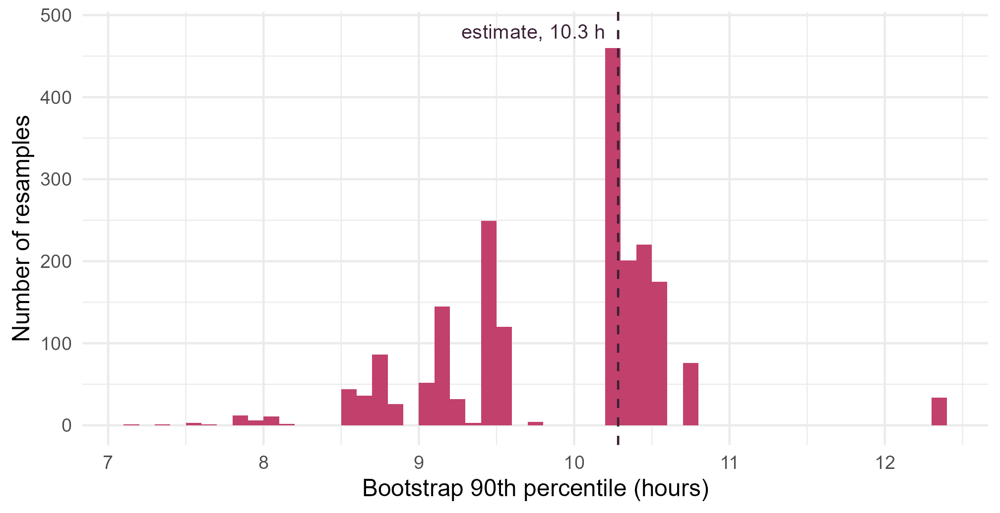
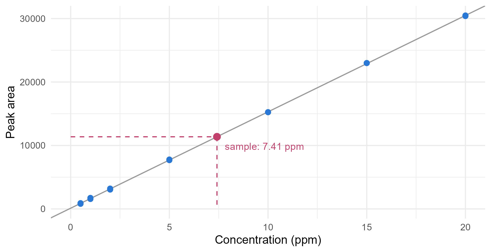

Module 4 · Lesson 6 of 14 Week 66 of 160 About 5–7 hours
The bootstrap
How uncertain is the answer? Resample the data and see
Estimate the standard error and a confidence interval for any statistic by resampling the data: the median and the 90th percentile of dryer times, with percentile and BCa intervals from the boot package. Compare the parametric bootstrap, bootstrap a calibration line to put an error bar on an inverse prediction, and see when the bootstrap fails.
After filtration, each batch goes into the dryer until its moisture is below 0.5%. The planners book the dryer for a fixed time per batch, and if a batch isn’t dry in time, the next one waits. They’d like to book a time that’s long enough for 90% of batches. Here are the last 30 batches’ drying times, in hours:
sort(dry$drying_h)
#> [1] 3.04 3.45 4.01 4.07 4.82 5.11 5.14 5.18 5.31 5.59 5.93 5.94
#> [13] 6.18 6.18 6.53 6.62 6.97 7.10 7.27 7.53 7.83 7.90 8.54 8.66
#> [25] 9.07 9.41 10.27 10.40 10.53 12.33
quantile(dry$drying_h, 0.9)
#> 90%
#> 10.283So the answer is about 10.3 hours. But how sure is that? Thirty batches is not many, and a different thirty would give a different 90th percentile. For a mean, the standard error is s/\sqrt{n}. For a 90th percentile there’s no simple formula, and for many statistics there’s none at all.
The bootstrap, invented by Bradley Efron in 1979, answers “how uncertain?” for almost any statistic, with one idea and a loop. It’s the most widely used tool in this module.
“Pulling yourself up by your own bootstraps” means doing the impossible with no outside help. The bootstrap gets a standard error from a single sample. It feels like cheating, but it isn’t!
In this lesson you’ll:
- resample the data to estimate a standard error
- build percentile and BCa confidence intervals
- compare the parametric bootstrap, which resamples from a model
- bootstrap a regression, to put an error bar on a calibration result
- see when the bootstrap fails
The sample stands in for the population
To know how much the 90th percentile varies from sample to sample, you’d want many samples of 30 batches. You only have one. The bootstrap’s idea is to treat that sample as if it were the population. Draw a new sample of 30 from it, with replacement, so that some batches appear twice and others not at all. That’s a bootstrap resample. Compute the statistic on it. Repeat a few thousand times. The spread of the results imitates the spread you’d see over real new samples:
- Draw a resample of size n from the data, with replacement.
- Compute the statistic on the resample.
- Repeat B times, for B = 2,000, say.
- The standard deviation of the B results is the bootstrap standard error.
It works because the sample’s distribution is our best estimate of the population’s distribution. With replacement matters: without it, every resample would be the original data in a different order.
Your turn. Start with the median drying time, 6.58 hours. Estimate its standard error from 2,000 bootstrap resamples.
Resample with replacement: replace = TRUE.
set.seed(4061)
boot_medians <- replicate(2000, median(sample(dry$drying_h, replace = TRUE)))
c(median = median(dry$drying_h), boot_se = sd(boot_medians))The median is 6.58 hours, with a bootstrap standard error of 0.53 hours. sample(x, replace = TRUE) draws length(x) values from x with replacement, which is exactly a bootstrap resample. (With replace = FALSE, every resample has the same median, and the standard error is 0.)
Bootstrap confidence intervals
The simplest bootstrap confidence interval is the percentile interval: the middle 95% of the bootstrap results, from their 2.5th to their 97.5th percentile. It needs no formula and no normality.
Your turn. Bootstrap the 90th percentile, the planners’ number. The setup code has a function q90() that computes it. Find the standard error and the 95% percentile interval.
The upper end of a 95% interval is the 97.5th percentile: 0.975.
set.seed(4062)
boot_q90 <- replicate(2000, q90(sample(dry$drying_h, replace = TRUE)))
c(estimate = q90(dry$drying_h), se = sd(boot_q90), quantile(boot_q90, c(0.025, 0.975)))10.3 hours, with a standard error of 0.76 hours and a percentile interval from 8.6 to 10.7 hours. That’s a lot of uncertainty for a booking time: with 30 batches, only three of them are in the slowest tenth.
Here’s the bootstrap distribution of the 90th percentile:
set.seed(4062)
boot_q90 <- replicate(2000, q90(sample(dry$drying_h, replace = TRUE)))
ggplot(data.frame(q = boot_q90), aes(x = q)) +
geom_histogram(binwidth = 0.1, boundary = 0, fill = "#C2416C") +
geom_vline(xintercept = q90(dry$drying_h), linetype = "dashed", color = "#3A1F35") +
annotate("text", x = q90(dry$drying_h) - 0.08, y = 480, label = "estimate, 10.3 h", hjust = 1, size = 3.6, color = "#3A1F35") +
labs(x = "Bootstrap 90th percentile (hours)", y = "Number of resamples") +
theme_minimal(base_size = 12)
It’s not a smooth curve, but a set of spikes. A resample’s 90th percentile is always near one of the few slowest batches, so only 51 different values ever appear. And on average, the resamples’ 90th percentiles are 0.38 hours below the original estimate: the bootstrap is telling you that the estimate itself is probably biased low. Both are warning signs that the simple percentile interval may not be accurate here.
Better intervals: BCa
The BCa interval (bias-corrected and accelerated) adjusts the percentile interval for the bias, and for a standard error that changes with the true value. It’s more accurate in many problems, and it’s what statisticians usually recommend. The boot package computes it, along with other bootstrap intervals. boot() needs the statistic as a function of the data and a vector of indices i, which says which observations are in each resample.
Your turn. Compute the percentile and BCa intervals with boot.
The function picks the resample with the indices: x[i].
set.seed(4063)
b <- boot::boot(dry$drying_h, statistic = function(x, i) q90(x[i]), R = 2000)
boot::boot.ci(b, type = c("perc", "bca"))The percentile interval is 8.0 to 10.7 hours, and the BCa interval is 8.6 to 12.3 hours, shifted up to correct the bias. Its upper end is the longest drying time in the data, 12.33 hours: the bootstrap can’t imagine a drying time longer than any it has seen. The honest summary for the planners: “about 10.3 hours, but with 30 batches it could easily be 12”.
The parametric bootstrap
The bootstrap above resamples the data, so it’s called nonparametric: it assumes nothing about the shape of the distribution. If you trust a model, the parametric bootstrap simulates new samples from the fitted model instead. Drying times are right-skewed, and their logarithms look normal (a Shapiro-Wilk test gives p = 0.93), so a lognormal model is reasonable. Its 90th percentile is \exp(\hat\mu + z_{0.9}\,\hat\sigma), where \hat\mu and \hat\sigma are the mean and SD of the log drying times, and z_{0.9} = 1.28.
Your turn. Bootstrap the lognormal model’s 90th percentile: simulate 2,000 samples of 30 from the fitted lognormal, and compute the model’s 90th percentile for each.
Simulate from the fitted model, with sdlog = sl.
ml <- mean(log(dry$drying_h))
sl <- sd(log(dry$drying_h))
q90_model <- function(x) exp(mean(log(x)) + qnorm(0.9) * sd(log(x)))
set.seed(4064)
boot_param <- replicate(2000, q90_model(rlnorm(30, ml, sl)))
c(estimate = q90_model(dry$drying_h), se = sd(boot_param), quantile(boot_param, c(0.025, 0.975)))The model’s 90th percentile is 10.1 hours, with a standard error of 0.83 hours and an interval from 8.6 to 11.8 hours. The interval reaches higher than the nonparametric percentile interval, because the model can imagine batches slower than any in the data. If the model is right, the parametric bootstrap is more accurate, especially for small samples and tail quantities like this one. If it’s wrong, it’s confidently wrong. Both answers agree on the message: book about 10 hours, and expect some batches to need 12.
Bootstrapping a regression
The lab measures an impurity by gas chromatography (GC). The GC doesn’t report concentrations, only peak areas, so the lab runs a calibration: 14 injections of standards with known concentrations, from 0.5 to 20 ppm. A straight line through them converts areas into concentrations. Then the sample of interest is injected three times, and its concentration is read off the line:
\hat{x}_0 = \frac{\bar{y}_0 - b_0}{b_1},
where \bar{y}_0 is the sample’s mean area, and b_0 and b_1 are the line’s intercept and slope.
ggplot(std, aes(x = conc_ppm, y = area)) +
geom_abline(intercept = coef(fit)[[1]], slope = coef(fit)[[2]], color = "grey60") +
geom_point(color = "#2a78d6", size = 2.2) +
annotate("segment", x = 0, xend = x0_hat, y = y0, yend = y0, linetype = "dashed", color = "#C2416C") +
annotate("segment", x = x0_hat, xend = x0_hat, y = y0, yend = 0, linetype = "dashed", color = "#C2416C") +
annotate("point", x = x0_hat, y = y0, color = "#C2416C", size = 3) +
annotate("text", x = x0_hat + 0.4, y = y0 - 1500, label = "sample: 7.41 ppm", hjust = 0, size = 3.6, color = "#C2416C") +
labs(x = "Concentration (ppm)", y = "Peak area") +
theme_minimal(base_size = 12)
The result, 7.41 ppm, depends on three uncertain things: the intercept, the slope and the sample’s mean area. It’s a ratio of them, so its standard error isn’t simple. The bootstrap handles it by rebuilding the whole experiment:
- A new calibration. The standards’ concentrations were chosen by the lab, so keep them fixed, and give each one a new random error: its fitted area plus a residual drawn at random from the 14 residuals. This is residual resampling.
- New injections of the sample. Its mean area plus the mean of three resampled residuals.
- A new result, read off the new line.
Your turn. Run the residual bootstrap. The setup code has the fitted areas fitted_area, the residuals res, the sample’s mean area y0, and a quick function line_coef() that returns a line’s intercept and slope (lm() would work too, but it’s slower in a loop).
The sample was injected three times: draw 3 residuals.
set.seed(4065)
x0_star <- replicate(2000, {
y_star <- fitted_area + sample(res, replace = TRUE) # a new calibration
b <- line_coef(std$conc_ppm, y_star)
y0_star <- y0 + mean(sample(res, 3, replace = TRUE)) # three new injections
(y0_star - b[1]) / b[2]
})
c(x0 = x0_hat, boot_se = sd(x0_star), quantile(x0_star, c(0.025, 0.975)))7.41 ppm, with a bootstrap standard error of 0.030 ppm, and a 95% interval from 7.35 to 7.47 ppm. So the lab can report “7.41 ± 0.06 ppm”. Most of the uncertainty comes from the sample’s own three injections, not from the calibration line.
Analytical chemistry textbooks have a formula for this standard error, derived with the delta method:
s_{\hat{x}_0} = \frac{s}{b_1} \sqrt{\frac{1}{m} + \frac{1}{n} + \frac{(\bar{y}_0 - \bar{y})^2}{b_1^2\, S_{xx}}},
with s the residual standard error, m = 3 injections of the sample, n = 14 standards, and S_{xx} = \sum (x_i - \bar{x})^2.
Your turn. Compute the formula’s standard error, and compare it with the bootstrap’s 0.030 ppm.
The last term divides by b_1^2 S_{xx}: Sxx.
s <- summary(fit)$sigma
b1 <- coef(fit)[[2]]
Sxx <- sum((std$conc_ppm - mean(std$conc_ppm))^2)
s / b1 * sqrt(1 / 3 + 1 / 14 + (y0 - mean(std$area))^2 / (b1^2 * Sxx))0.033 ppm, close to the bootstrap’s 0.030. The bootstrap is a little smaller because residuals are a little smaller than the true errors: the line was fitted to make them small. Multiplying the residuals by \sqrt{n/(n-2)} = 1.08 before resampling corrects most of that. When a formula exists, the two should agree, and that’s a good check of your bootstrap. The bootstrap’s value is for the problems where no formula exists.
When the bootstrap fails
The bootstrap works for most statistics, but not all. It needs the statistic to depend smoothly on the data, and it needs the resamples to imitate the way the data were collected. Watch out for:
- Extremes. The largest value of a resample can never exceed the largest value in the data, so the bootstrap can’t tell you anything about values beyond it (Challenge 2).
- Dependent data. Hourly readings from the historian are correlated with their neighbors. Resampling single readings breaks that, and the standard errors come out too small. Resample blocks of consecutive readings instead (the block bootstrap), or use a time series model (Module 6).
- Very small samples. With 5 observations, there are only 126 different resamples, and the sample may not look much like the population.
- The design. Resample the way the data were produced. The calibration’s concentrations were fixed by the lab, so the residual bootstrap kept them fixed. Challenge 1 resamples whole standards instead.
Challenge round
Challenge 1 · Resampling cases. Another way to bootstrap a regression is to resample the cases, the (concentration, area) pairs, with replacement. Some resamples then have the 20 ppm standard twice and the 0.5 ppm standard not at all. Compute the bootstrap standard error this way, and compare it with the residual bootstrap’s 0.030.
Use the same indices i for the areas as for the concentrations.
set.seed(4066)
x0_cases <- replicate(2000, {
i <- sample(14, replace = TRUE) # which standards are in the resample
b <- line_coef(std$conc_ppm[i], std$area[i])
y0_star <- y0 + mean(sample(res, 3, replace = TRUE))
(y0_star - b[1]) / b[2]
})
sd(x0_cases)0.031 ppm, almost the same here. Case resampling treats the concentrations as random, which suits observational data, where the x values aren’t chosen. It’s also safer when the errors’ spread changes with x, because each residual stays with its own standard. Residual resampling matches a designed experiment like a calibration, and it relies on the line being the right model.
Challenge 2 · The bootstrap and the maximum. The slowest batch took 12.33 hours. Bootstrap the maximum drying time, and find the share of resamples whose maximum is exactly the sample’s maximum.
Compare with the largest drying time, max(dry$drying_h).
set.seed(4067)
boot_max <- replicate(2000, max(sample(dry$drying_h, replace = TRUE)))
mean(boot_max == max(dry$drying_h))66% of the resamples have exactly 12.33 hours as their maximum. In theory, it’s the chance that the slowest batch appears at least once in 30 draws, 1 - (29/30)^{30} = 64\%. So the bootstrap distribution is mostly one spike at the observed maximum, and nothing at all above it, while the true maximum of a new sample of 30 could well be higher. For extremes, use a model of the tail, such as the lognormal, or extreme value theory.
Quick quiz
1. How is a bootstrap resample drawn?
With replacement, each resample is a slightly different version of the data.
2. What is the bootstrap standard error?
It measures how much the statistic varies from resample to resample.
3. The bootstrap replicates of a statistic average 0.38 below the original estimate. What does that suggest?
The bootstrap estimates the bias as the average replicate minus the estimate.
4. How does the parametric bootstrap differ from the nonparametric one?
It’s more accurate when the model is right, and misleading when it’s wrong.
5. Why does the calibration’s bootstrap keep the standards’ concentrations fixed?
Resample the way the data were produced.
6. For which of these does the simple bootstrap fail?
A resample’s maximum can never exceed the data’s maximum, so the bootstrap can’t see what lies above it.
Wrap-up
You can now put an error bar on almost anything. Here’s what you’ve learned:
- The bootstrap treats the sample as the population: resample it with replacement, recompute the statistic, and repeat. The SD of the results is the bootstrap standard error.
- Percentile intervals are the middle 95% of the bootstrap results. BCa intervals correct them for bias and skewness, and are usually better. The
bootpackage computes both. - The planners’ number: the 90th percentile of drying times is about 10.3 hours, but with only 30 batches the truth could easily be 12.
- The parametric bootstrap resamples from a fitted model. It can see beyond the data, which helps for tail quantities, as long as the model is right.
- Regression: residual resampling for designed experiments, and case resampling for observational data. The calibration result is 7.41 ± 0.06 ppm, in agreement with the textbook formula.
- Failures: extremes, dependent data, tiny samples, and resampling that doesn’t match the design.
TipPractice in RStudio (optional, about an hour)
Download drying_times.csv and gc_calibration.csv into your project’s data-raw/ folder.
- How many resamples? Bootstrap the median’s standard error with B = 50, 200, 1,000 and 10,000, five times each with different seeds. How much do the estimates vary at each B? For standard errors, a few hundred resamples are usually enough. Percentile intervals need more, because they depend on the tails.
- Rescaled residuals. Multiply the calibration’s residuals by \sqrt{14/12} before resampling. Does the bootstrap standard error move closer to the formula’s 0.033?
- Check the bootstrap with a simulation. Simulate 500 samples of 30 from a lognormal with
meanlog = 1.88andsdlog = 0.34. For each one, compute the percentile interval for the 90th percentile with 500 resamples. What share of the intervals contains the true 90th percentile,qlnorm(0.9, 1.88, 0.34)? (This is a simulation study of the bootstrap itself. It takes a minute or two.) - The block bootstrap. For a time series, resample blocks of consecutive values. Simulate 200 values of an autocorrelated series with
stats::filter(rnorm(200), 0.8, method = "recursive"), and compare the bootstrap standard error of its mean from resampling single values with resampling blocks of 20 (pick 10 random block starts). Which is larger, and why?
NoteKey words from this lesson
- Bootstrap
- Estimating the sampling distribution of a statistic by recomputing it on many resamples of the data.
- Bootstrap resample
- A sample of the same size as the data, drawn from the data with replacement.
- Bootstrap standard error
- The standard deviation of a statistic over the bootstrap resamples.
- Percentile interval
- A confidence interval made of the 2.5th and 97.5th percentiles of the bootstrap results.
- BCa interval
- A bootstrap interval corrected for bias and for a standard error that changes with the true value (“bias-corrected and accelerated”).
- Parametric bootstrap
- A bootstrap that simulates new samples from a fitted model, instead of resampling the data.
- Residual resampling
- Bootstrapping a regression by keeping the x values fixed and adding resampled residuals to the fitted values.
NoteWant to read more?
- Tim Hesterberg, “What teachers should know about the bootstrap”, The American Statistician (2015), free on arXiv. When the bootstrap works, when it doesn’t, and which intervals to trust, with many pictures.
- Gareth James and others, An Introduction to Statistical Learning, section 5.2, “The bootstrap”, with an R lab in section 5.3. A short, friendly introduction.
- Bradley Efron and Robert Tibshirani, An Introduction to the Bootstrap (Chapman & Hall, 1993). The classic book, by the bootstrap’s inventor. Not free.